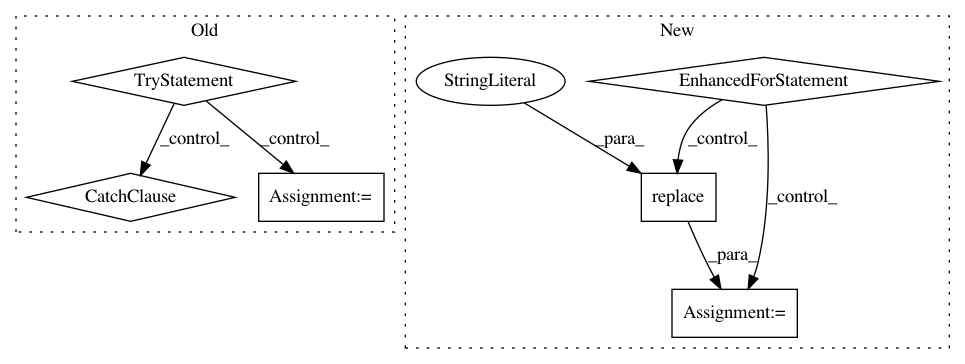

3e8c80ed9857631d6ce5d1adb35f451b9f780cb7,scanpy/examples/__init__.py,,get_example,#Any#Any#Any#,11
Before Change
exmodule : dict, optional
Example module.
try:
try:
from sys import path
path.insert(0, ".")
import scanpy_user
except ImportError:
sett.m(0, "--> did not find user examples, to provide some,\n"
" generate file scanpy_user.py in your working directory,\n"
" see https://github.com/theislab/scanpy//work-on-your-own-examples")
exfunc = getattr(scanpy_user, exkey)
exmodule = scanpy_user
except (UnboundLocalError, AttributeError):
try:
// additional possibility to add example module
from . import builtin_private
exfunc = getattr(builtin_private, exkey)
exmodule = builtin_private
except (ImportError, AttributeError):
try:
exfunc = getattr(builtin, exkey)
exmodule = builtin
except AttributeError:
msg = ("Do not know how to run example "" + exkey +
"".\nEither define a function " + exkey + "() "
"in ./scanpy_user.py that returns an AnnData object.\n"
"Or, use one of the builtin examples:"
+ exkeys_str())
from sys import exit
exit(msg)
from os.path import exists
exfile = readwrite.get_filename_from_key(sett.basekey)
if (not exists(exfile)
or sett.recompute in ["read", "pp"]):
After Change
not_found = True
from sys import path
path.insert(0, ".")
for filename in loop_over_filenames:
exmodule = __import__(filename.replace(".py",""))
try:
exfunc = getattr(exmodule, exkey)
not_found = False
except AttributeError:
pass
if not_found:
try:
// additional possibility to add example module
from . import builtin_private
In pattern: SUPERPATTERN
Frequency: 4
Non-data size: 6
Instances
Project Name: theislab/scanpy
Commit Name: 3e8c80ed9857631d6ce5d1adb35f451b9f780cb7
Time: 2017-02-28
Author: f.alex.wolf@gmx.de
File Name: scanpy/examples/__init__.py
Class Name:
Method Name: get_example
Project Name: mozilla/TTS
Commit Name: b9629135db173344eef4316136542b49b00b9808
Time: 2019-01-16
Author: egolge@mozilla.com
File Name: utils/text/__init__.py
Class Name:
Method Name: text2phone
Project Name: D2KLab/entity2rec
Commit Name: f089384f349d06ff3d2933843266a1805b69dba8
Time: 2018-07-18
Author: enricopalumbo0@gmail.com
File Name: entity2rec/sparql.py
Class Name: Sparql
Method Name: _define_properties
Project Name: mozilla/TTS
Commit Name: e1cb7c150166e2d911c65f1210a5023089f696c1
Time: 2019-01-16
Author: egolge@mozilla.com
File Name: utils/text/__init__.py
Class Name:
Method Name: text2phone